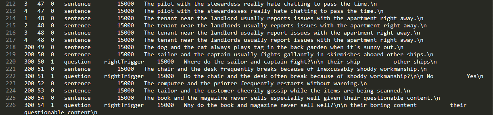
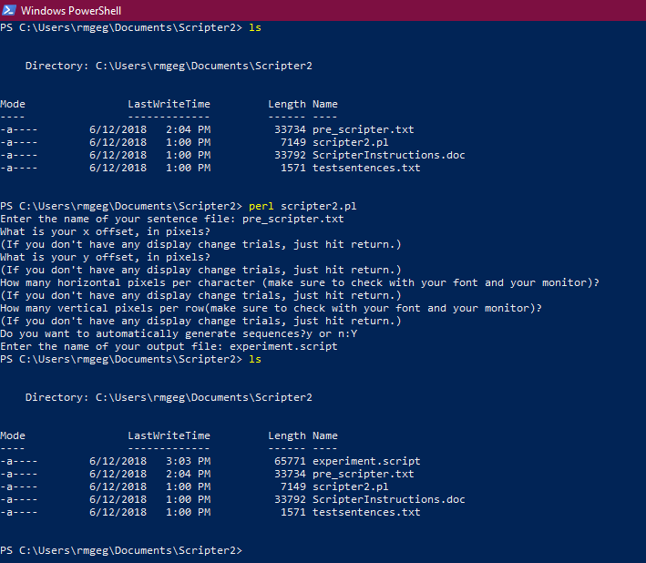
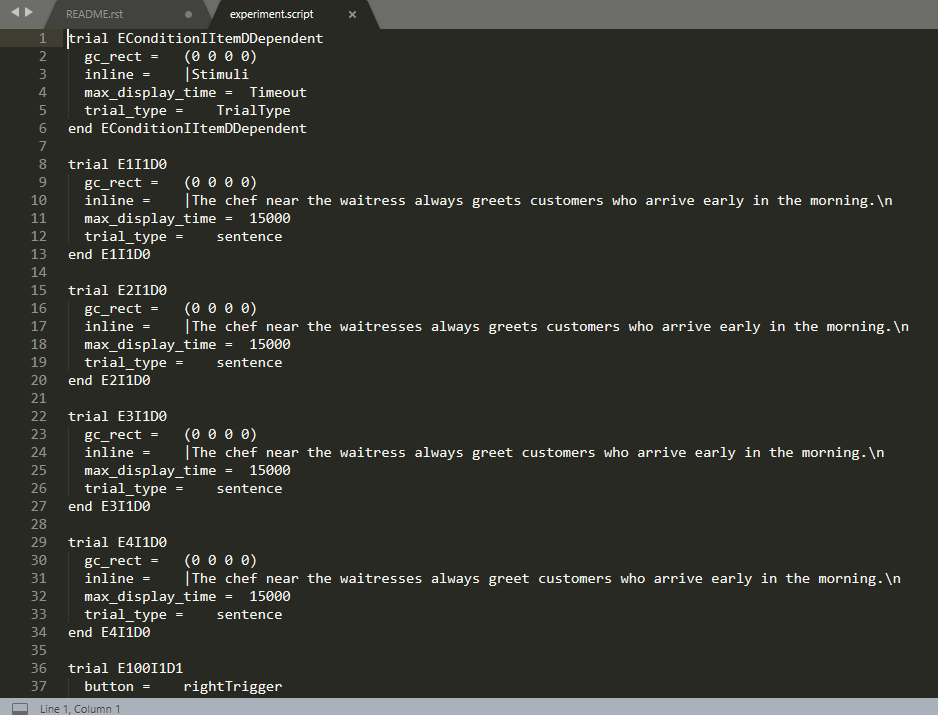
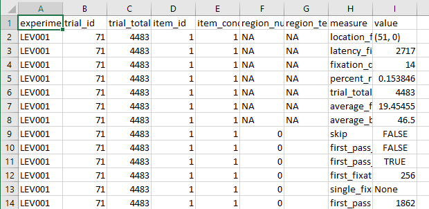

Eyetracking Guide¶
Templates and examples¶
Regioned files
Eyetracking scripts
Running logs
Analysis
Single line reading experiments¶
Gathering data¶
Preparing to run¶
Create a region file for your items
Creating a region file for your items¶
Create a text file of your stimuli, then insert region boundaries using forward slashes. This needs to be done for every line; consider using greps to do this automatically (see here).
Regioning conventions
- For a given critical word or words, the whitespace before it is typically included in the region.
- There MUST be a backslash on the final region, before the newline '\n'.
- There is no whitespace before the first word.
As an example, a regioning of this sentence:
17 81 Which basketball players is the coach planning to use this season?\n
Might be:
17 81 /Which basketball players/ is the coach/ planning/ to use this season?/\n
Once you have inserted all breaks in the sentences, take the resulting file (suppose it's called 'annotated_sents.txt'), and use the makeRegions.py file to convert it into a CNT file. From the command line:
python Scripts/makeRegions.py 'annotated_sents.txt'
where you pass the name of the file you just made as a command-line argument to makeRegions.py. This should create a file called 'output.reg.txt' in which every line looks like this:
17 81 6 0 0 24 0 31 0 37 0 46 0 66 0
(COND#) (ITEM NO.) (NO. REGIONS) (X1START) (Y1START) (X2START) (Y2START) (X3START) (Y3START) ...
For single line experiments, only the XSTART bits matter. In this example, for Item 81, Condition 17, the first region begins at (character) 0 and goes up to but does not include character 24; the second region begins at 24, and goes up to but does not include 31; and so on.
Look over your work!
Errors in regioning are super easy to make, super difficult to notice later on, and mess up your data like crazy.
Take the output.reg.txt file, and inspect it carefully at this point. Check that every item has the number of regions you expect, and check that they all look right. Sample a couple of lines randomly, and confirm by hand that the region limits in output.reg.txt are indeed what they should be. If you have a very predictable manipulation (e.g you know the region limits in condition 2 should always be one character later than in condition 1), then you should also eyeball all the regions and confirm that they fit the template.
You'll need this (double-checked!) file later on.
Create a script file to run your eyetracking experiment
Creating a script file using Scripter2¶
Assuming you have your items in a spreadsheet, you can use Scripter2 to format them the way the Eyetrack program requires. You'll need to organize your items as required by Scripter2, all items following this order (the header isn't used, so the naming doesn't matter):
| Condition | Item | Dependent | Trial Type | Answer | Timeout (in ms) | Sentence 1 | (Sentence 2) |
|---|---|---|---|---|---|---|---|
 Items formatted for use with Scripter2.
Items formatted for use with Scripter2.
For an explanation of the formatting and detailed description of the columns, see chapter 1 of this manual, written by Matthew Abbott while he was an undergraduate RA in Adrian Staub's lab.
After you export the sheet as a tab-delimited file, it should look something like this:

The exported text file to use with Scripter2.In this example, experimental items have conditions 1-4, questions have condition 100, filler items have condition 200, and filler questions have condition 300. Doublecheck that you've coded the conditions properly, and that questions are marked as dependent on their respective item.
From the command line, navigate to the directory that has scripter2 and your items and then run Scripter2.

Running Scripter2 from the command line -- this should be the same across operating systems.You should specify the name of the input and output files, but can simply skip the specifications for x and y if you're not making any display changes. You definitely do want to generate sequences.
The resulting output file should look similar to this:

The trial at the top is essentially a key, made from the header -- before running the script, you should delete it.In your preferred text editor, copy the following above the items in your script file:
%BeginHeader
Conditions = E1-4
Question = E100
Items 1-48
Fillers
Condition = F200
Questions = F300
Items = 49-119
%EndHeader
set conditions = 5
set experiments = 2
set expConditions = 4 1
set background = 16777215
set foreground = 0
set filterMode = 2
set windowThreshold = 0
set calibration_type = 0
set display_type = LCD
trial_type Message
text_format = 'Monaco' 12 25 20 20 nonantialiased
text_weight = normal non-italic
button = Y
button = X
button = B
button = A
button = toggle
button = leftTrigger
button = rightTrigger
output = nostream
trigger = nogaze
cursor_size = 0
dc_delay = 0
stimulus_delay = 0
revert = 0
highlight_color =197148
end Message
trial_type question
text_format = 'Monaco' 12 48 15 268 nonantialiased
text_weight = normal non-italic
button = leftTrigger
button = rightTrigger
output = nostream
trigger = nogaze
cursor_size = 0
dc_delay = 0
stimulus_delay = 0
revert = 0
highlight_color =1639238
end question
trial_type sentence
text_format = 'Monaco' 11 24 18 315 nonantialiased
text_weight = normal non-italic
button = Y
button = X
button = B
button = A
button = toggle
button = leftTrigger
button = rightTrigger
output = stream
trigger = gaze
cursor_size = 0
dc_delay = 0
stimulus_delay = 0
revert = 0
highlight_color =2163302
end sentence
trial P1I1D0
gc_rect = (0 0 0 0)
inline = |In the following experiment, you will be asked to read a series of \nsentences. Some of the sentences will be followed by a comprehension \nquestion about the sentence. When you have finished reading each sentence,\npress the right trigger on your response pad to advance to the question.\nTo answer a question, press the left trigger to choose the response on the left side of the screen,\nand the right trigger to choose the one on the right side.\nBefore viewing each sentence, you will be asked to fixate on a box \nthat will appear on the left side of the screen. Upon fixation, the sentence \nscreen will automatically advance.\n\nPlease press the right trigger to begin a practice session.
max_display_time = 3000000
trial_type = Message
end P1I1D0
trial P1I1D1
gc_rect = (0 0 0 0)
inline = |Very few cars in this garage were made in Japan because this garage specializes in European cars.
max_display_time = 60000
trial_type = sentence
end P1I1D1
trial P1I1D2
button = leftTrigger
gc_rect = (0 0 0 0)
inline = |Does this garage specialize in European cars?\n\nYes No
max_display_time = 60000
trial_type = question
end P1I1D2
trial P1I1D3
gc_rect = (0 0 0 0)
inline = |The energetic boy running around the park didn't seem to mind when he tripped and hurt himself.
max_display_time = 60000
trial_type = sentence
end P1I1D3
trial P1I1D4
gc_rect = (0 0 0 0)
inline = |No one has ever made as much money as Bill Gates before.
max_display_time = 60000
trial_type = sentence
end P1I1D4
trial P1I1D5
gc_rect = (0 0 0 0)
inline = |Tourists who visit Paris in the spring don't get to see much because the city is packed with people.
max_display_time = 60000
trial_type = sentence
end P1I1D5
trial P1I1D6
gc_rect = (0 0 0 0)
inline = |END PRACTICE SESSION\n\nIf you need a break during the experiment \n(if your eyes get tired, for example), \nlet the experimenter know.\nDo you have any questions?\nIf not, press the right trigger to start the experiment.
max_display_time = 3000000
trial_type = Message
end P1I1D6
%%%%%%%%%%%%%%%%%%%%%%%%%%%%%%%%%%%%%%%% Move this to the top of your sequences -- delete this marker
sequence SP1I1
P1I1D0
P1I1D1
P1I1D2
P1I1D3
P1I1D4
P1I1D5
P1I1D6
end SP1I1
Edit the header, variables, and instruction screen to match your items, as well as any parameters you'd like to change, such as the gaze condition. When running subjects, set the trigger for trial_type sentence equal to gaze, but if you would like a version of the experiment which doesn't require the participant to hit a gaze box (for your own testing purposes, or so that you don't collect data from certain subjects, for example), set it equal to nogaze.
Controlling your lists¶
Open the script file on the host computer connected to the eyetracking machine. You can test the script by opening it in EyeTrack. You should test each condition in your script. See here to create your own lists.
Running an eyetracking experiment¶
...
Bringing a participant in
Informed consent¶
How do we talk to people who we think are native speakers vs non-native speakers?
For some of the IRBs, you're not allowed to get consent from the non-native speakers because it may lead them to believe you'll use their data, which you won't. If your IRB considers that deceptive, you'll need to know ahead of time whether they're a native speaker or not.
This is straightforward if they note in their prescreen that they aren't a native speaker, but for less straightforward cases (for example: someone says they're a native speaker and it turns out that actually they didn't start learning English until they were six), you should use the back side of the demographics form to have a conversation with them. Talk them through how they learned their languages -- what is your first language, and where did you go to school from ages 2-5. On the back of the demographics form they should write all the languages they've been exposed to and rate how comfortable they are on a scale of 1-10 (where 1 is minimal and 10 means I think in this, speak in this, dream in this).
The spiel¶
- Stay personable. It's easy to forget exactly how it feels for someone to come into the lab and be examined. Do everything in your power to mitigate this. 'We are not testing you, we're testing the sentences. It's normal to be unsure, it's normal to struggle, don't worry about this.' Acknowledge the curtain in the spiel and make sure you mention that it's just about making sure they don't have to deal with you out of the corner of their eye.
- Be coherent. There needs to be an order in how you explain things. Write a script and riff around that. Make sure to iron out any points or examples that need to be exactly the same for each participant.
- Get them on board. In the script / explanation it's easy to leave out why it's so important for them to have a good calibration. Make the point that the calibration is advantageous to them, not just you. Tell them that they can stop and tell you when the calibration seems off.
Calibration¶
...
I'll usually notice, but if you feel like you're struggling...
Drift correction screen. Every 10 trials (SR research).
Things to keep in mind with running logs
-
Imagine that you need to figure out whether a particular person took your experiment and if so when, but for some reason the consent form with their name on it doesn't have a listed subject number. Can you do it?
-
The IRB sometimes asks for number of subjects and their gender at the end of the semester. Make that easy for yourself.
-
Figure out in advance how you are going to label subjects that leave half way through (maybe you can't track them) and non-native speakers. Do you rename that file and give the next person that subject number, or do you just go on to the next subject number? Whichever you choose, stay consistent! Document what you do when you do it.
After you've run a participant, save their data file, making sure the filename is 6 characters or less (e.g. EYE002.edf).
Analyzing data¶
...
Prepare your data for analysis
Preparing your data for analysis¶
To do anything further with the data, you'll have to convert it from .edf to .asc. On the host computer, open the command line and navigate to the directory with the .edf files in it. edf2asc *.edf creates .asc versions of all the .edf files in that directory.
We need to parse the .asc files into a series of fixations we can match against the regioned sentences from earlier. We'll use Robodoc to do this. You'll need to edit the parameter file (parameter.txt, in RoboDoc_and_utils/Robodoc) to specify the directory you've stored your .asc files in and the region file you made, as well as to reflect the exclusion criteria you'd like to use.
Once you've edited the parameters, hop into the command line and run Robodoc: Robodoc.py edited_parameters.txt.
If everything's gone smoothly, you'll have a folder of DA1 files as well as several folders and files detailing what files were processed, excluded, and kept, as well as blink information for each subject.
It's at this point that we'll use SideEye to process the DA1 files into measures we can analyze. (Note: SideEye requires Python >= 3.5. It's easiest to install with pip: in Python, pip install sideeye.)
From the examples folder, copy sample.py and sample_config.json into the directory containing a folder of DA1 files and a .cnt or .reg region file. Open both files in a text editor. Replace the file paths in sample.py with paths to your DA1 and region files. Replace sample_output.csv with whatever you want the output file to be named. Edit sample_config.json to match the parameters needed for your experiment. See the readme.rst for more information.
The resulting output file should look like this:

Giving the data a first pass
Where to start¶
Success